《CSAPP（第三版）》读书笔记（第 6-8 章）
第六章、存储器层次结构
- Page 400随机访问存储器（RAM）：
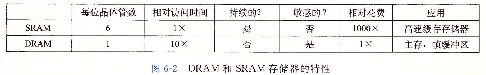
- 静态（SRAM）：将每个位存储在一个“双稳态”存储器中，抗干扰能力强，只要供电，数据就会保持不变，访问速度较快。一般用来作为高速缓存存储器，即可用在 CPU 芯片上，也可以用在片下；
- 动态（DRAM）：将每个位存储为对一个电容的充电，抗干扰能力弱，访问速度较慢。一般用作“主存”以及图形系统的帧缓冲区。
- Page 402DRAM 芯片的数据读取过程：
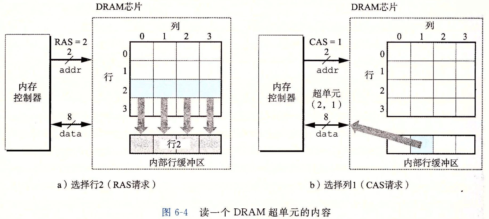
- 每个“超单元”由若干个 DRAM 单元（每个可存储 1 位数据）组成；
- 为了读取超单元 (i, j) 的内容，内存控制器将行地址 i 发送到 DRAM，然后是列地址 j。其中，行地址 i 称为 RAS（Row Access Strobe，行访问选通脉冲）请求。同理，j 为 CAS（Column Access Strobe，列访问选通脉冲）；
- DRAM 的读取响应会先将行的整个内容都复制到一个内部行缓冲区，然后再通过对应的列信号来选取具体的某一个超单元中的 8 位值。
- Page 402内存模块：由多个 DRAM 芯片组成。
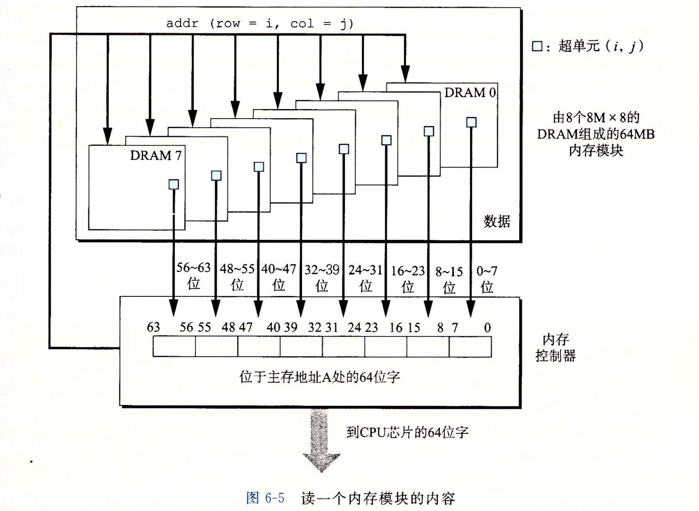
- 要取出内存地址 A 处的一个字，内存控制器将 A 转换成一个超单元地址 (i, j)，并将它发送到内存模块，然后内存模块再将 i 和 j 广播到每个 DRAM。作为响应，每个 DRAM 输出它的 (i, j) 超单元的 8 位内存。模块中的电路收集这些输出，并把它们合并成一个 64 位字，再返回给内存控制器。
- Page 403增强的 DRAM：
- 快页模式 FPM DRAM：当需要从超单元中连续地读出数据时，可以只发送一个 RAS/CAS 请求来指定超单元的行，然后再跟随一连串的独立 CAS 请求连续地读取数据（不再需要每次都发送 RAS/CAS 请求）；
- 扩展数据输出 EDO DRAM：允许各个 CAS 信号在时间上靠得更紧密一点；
- 同步 SDRAM：可以比上述异步存储器更快地输出它的超单元内容；
- 双倍数据速率同步 DDR SDRAM：对 SDRAM 的一种增强，通过使用两个时钟沿作为控制信号，使得 DRAM 的速度翻倍。不同类型的 DDR SDRAM 的区别在于不同的，用于提高有效带宽的预取缓冲区的大小（“DDR N” 对应 2^N 位大小）不同；
- 视频 VRAM：用在图形系统的帧缓冲区中。其输出是通过一次对内部缓冲区的整个内容进行移位得到的，并且允许对内存并行地读和写。
- Page 405总线结构：
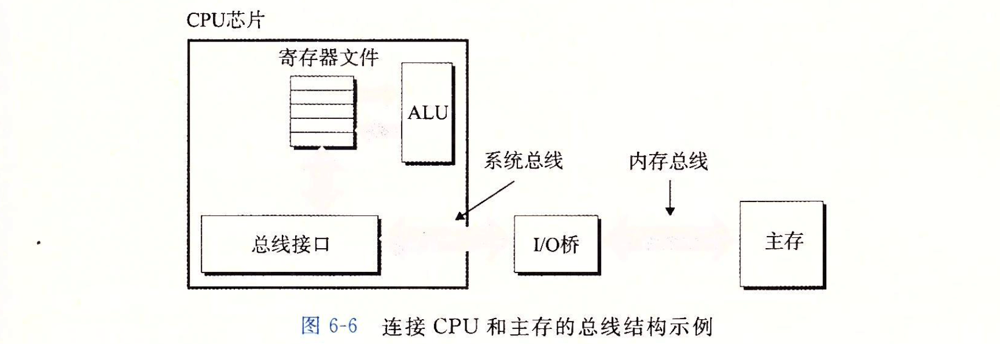
- 总线是一组并行的导线，能携带地址、数据和控制信号；
- 每次 CPU 和主存之间的数据传送都是通过一系列步骤完成的，这些步骤称为“总线事务”。“读事务”从主存传送数据到 CPU，“写事务”反之；
- “I/O 桥接器”芯片组内部包含内存控制器，用来在系统总线和内存总线之间转换电子信号，同时它也与 I/O 总线相连。
- Page 408磁盘容量的计算公式：
- Page 414固态硬盘（SSD）：
- 从 SSD 中读取数据比写要快；
- 页大小一般为 512 字节到 4 KB，块由 32~128 个页组成；
- 数据以“页”为单位进行读写，只有在一页所属的块整个被擦除后，才能写这一页。而擦除块的速度较慢，因此导致“写”的延迟较高；
- 一个 SSD 封装由一个或多个闪存芯片和闪存翻译层（用于“翻译”对某个逻辑块的读写请求）组成；
- Page 418局部性（locality）原理：
- 时间局部性：被引用过一次的内存位置可能在不远的将来再被多次引用；
- 空间局部性：如果一个内存位置被引用了一次，那么程序很可能在不远的将来引用附近的一个内存位置。
- 一个空间局部性很差的典型例子：
// 非“行优先”的顺序扫描数组，导致数据引用的位置不连续（C 中数组在内存中是以行优先的形式存放的），因此导致“空间局部性”很差；
int sum(int a[M][N]) {
int i, j, sum = 0;
for (j = 0; j < N; ++j) {
for (i = 0; i < M; ++i) { // bad: column first.
sum += a[i][j];
}
}
return sum;
}
- 评价局部性的基本原则：
- 重复引用相同变量的程序有良好的时间局部性；
- 对于具有步长为 k 的引用模式的程序，步长越小，空间局部性越好；
- 对于取指令来说，循环有好的时间和空间局部性。循环体越小，循环迭代次数越多，局部性越好。
- Page 422存储器层次结构中各层之间的通信：对于每个 k，位于 k 层的更快更小的存储设备作为位于 k+1 层更大更慢存储设备的缓存。数据总是以“块大小”为传送单元（带来了“空间局部性”优势），在两个层次之间来回复制。通常来说，层次结构中较低层的设备访问时间较长，因此为了补偿这些较长的访问时间，倾向于使用较大的块。
- 当程序需要第 k+1 层（慢速层）的某个数据对象时：
- 缓存命中：可以在第 k 层中找到对应的数据，速度更快；
- 缓存不命中：第 k 层的缓存会从第 k+1 层缓存中取出包含数据的那个块，并缓存在第 k 层。在缓存时若当前缓存已满，则会根据“缓存替换策略”来替换某个块。
- 冷不命中：即缓存冷启动时不存在，属于短暂事件，在缓存稳定后不会再次出现；
- 冲突不命中：每次从 k+1 层映射存放到 k 层的缓存块都会被替换掉（比如由于某种固有的映射关系）；
- 容量不命中：缓存太小，无法处理工作集。
- Page 425现代计算机系统中的缓存体系：

- Page 426高速缓存存储器（L1~L3）的组织结构：
- 一般而言，高速缓存的结构可以用元组 (S, E, B, m) 来描述。其中，S 为组数、E 为每组的行数、B 为块大小（字节）。m 为主存的物理地址位数；
- 高速缓存的结构将 m 个地址位划分成了 t 个标记位、s 个组索引位和 b 个块偏移位。当在缓存中查找匹配数据时，只有当且仅当设置了有效位并且该行的标记位于地址中的标记位相匹配时，组中的这一行才包含这个字；
- 直接映射高速缓存：每个组的高速缓存行数为 1;
- 高速缓存确定一个请求是否命中，然后抽取出被请求的字的过程，分为三步：(1) 组选择；(2) 行匹配；(3) 字抽取；
- 数据总是以“块大小”为传送单元（*对于连续数据而言，可能会存在前一次的内存数据加载导致下一次将要访问的数据也被同时缓存），在层次之间来回复制。
- 地址到“标记、索引、偏移”位的映射示例：
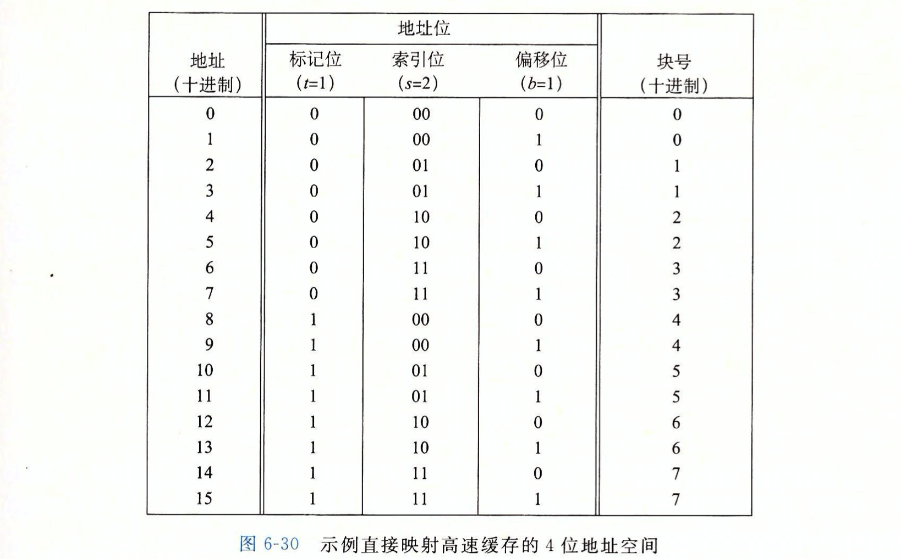
- 上述示例对应的描述：(S, E, B, m) => (4, 1, 2, 4)；
- 由“标记、索引、偏移”位组成的“地址位”正好对应地址的二进制表示。
- Page 431高速缓存“抖动”：即高速缓存反复地加载和驱逐相同的高级缓存块的组。解决方法：由于地址与高速缓存具体组的映射关系是固定的，因此可以通过适当调整引用数据地址之间的相互关系，来避免同一缓存组被来回驱逐的情况。
- Page 433组相联高速缓存：每个组保存有多于一个的高速缓存行（1 < E < 高速缓存容量/B）。
- 组选择过程与“直接映射高速缓存”相同；
- 行匹配过程：需要与对应组内每一个有效位为 1 的行其标记位进行检测，若标记相同，则匹配成功；
- 不命中时的行替换：替换组内行时的几个策略：
- LFU（Least-Frequently-Used）：替换最不常使用的一行；
- LRU（Least-Recently-Used）：替换最后一次访问时间最久远的一行；
- 极端的情况：全相联高速缓存，即只有一个组。只适合做小的高速缓存，一般仅用于 TLB，用于缓存页表项。
- Page 438“写回”与“写分配”：
- 写命中：假设要写一个已经缓存了的字 w，在高速缓存更新了它的 w 副本之后，如何更新 w 在高速缓存较低层次中的副本呢？“写回”，即尽可能地推迟更新，只有当替换算法要驱逐这个更新过的块时，才把它写到紧接着的低一层中。“直写”：立即将高速缓冲块的内容写回紧接的低一层中（会频繁引起总线流量）；
- 写不命中：若写不命中，“写分配”会加载相应的低一层中的块到当前层级的高速缓存中，然后再更新这个高速缓存块。“非写分配”：避开高速缓存，直接把字写到低一层中。
-基本逻辑：
- 较高层次：（直写 <-> 非写分配）
- 较低层次：（写回 <-> 写分配）
-原则：*保持局部性，优先保障高层次高速缓存内的数据更新。一般而言，高速缓存越往下层，越可能使用写回而不是直写。
- Page 438一个真实的高速缓存层次结构（Intel Core i7）：
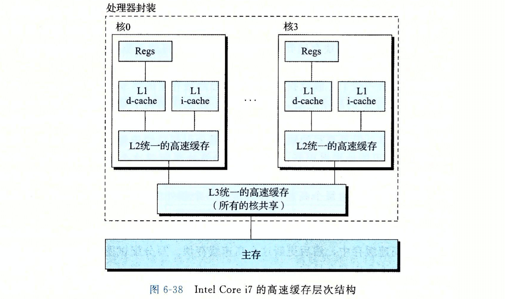
- Page 440编写高速缓存友好代码的原则：
- 让最常见的情况运行的更快（专注于优化核心部分的逻辑）；
- 尽量减小每个循环内部的缓存不命中率。
- 对局部变量的反复引用是好的，因此编译器可以将它们缓存在寄存器文件中（一直在重复使用某个值，时间局部性）；
- 循环中步长为 1 的引用模式是好的，因为存储器层次结构中所有层次上的缓存都是将数据存储为连续的块（空间局部性）。
- Page 446存储器山：可用于描述存储系统的性能。
- Page 448一个性能优化实例：
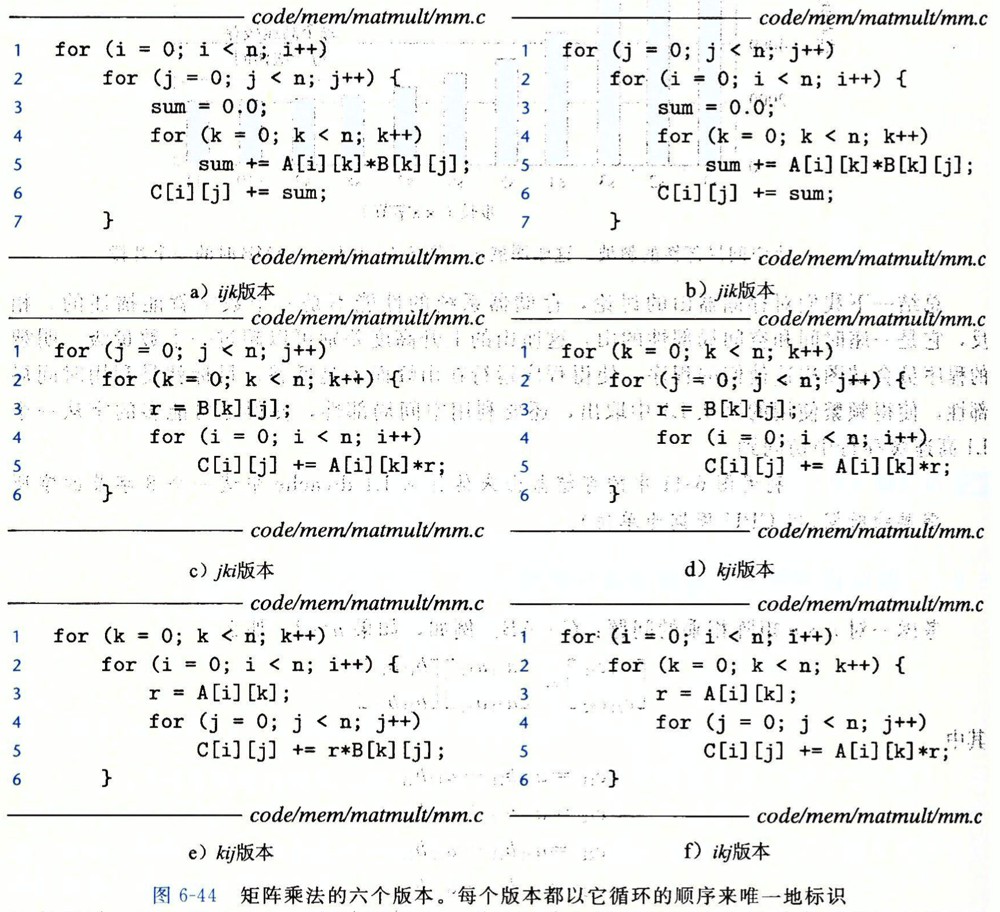
- 最后的 kij 版本与 ikj 版本具有最好的性能；
- 利用局部性：
- 将你的注意力集中在内循环上，大部分计算和内存访问都发生在这里；
- 通过按照数据对象存储在内存中的顺序、以步长为 1 来读数据，从而使程序的空间局部性最大；
- 一旦从存储器中读入了一个数据对象，就尽可能多地使用它，从而使得程序中的时间局部性最大；
第七章、链接
（*下文中“节”可以与“段”互换）
- Page 464链接：将各种代码和数据片段收集并组合成一个单一文件的过程。
- 编译时：源代码被翻译成机器代码时，静态链接；
- 加载时：被“动态链接器”加载时，动态链接；
- 运行时：
dlopen；
- Page 465一个示例程序：
// main.c
int sum(int *a, int n);
int array[2] = {1, 2};
int main() {
int val = sum(array, 2);
return val;
}
// sum.c
int sum(int *a, int n) {
int i, s = 0;
for (i = 0; i < n; i++) {
s += a[i];
}
return s;
}
- Page 466静态链接：
- 两个主要任务：
- 符号解析（symbol resolution）：目标文件定义和引用符号，每个符号对应于一个函数、一个全局变量或一个静态变量。该步骤将每个符号引用正好和一个符号定义关联起来；
- 重定位（relocation）：编译器和汇编器生成从地址 0 开始的代码和数据 Section。链接器通过把每个符号定义与一个内存位置关联起来，从而重定位这些 Section，然后修改所有对这些符号的引用，使它们指向这个内存位置。链接器使用汇编器产生的重定位条目来进行重定位。
- Page 467ELF 可重定位目标文件：
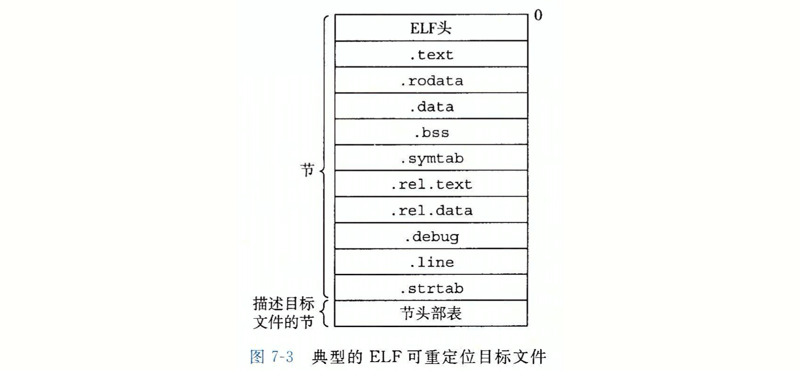
- ELF 文件头（ELF header）：16 字节。描述了生成该文件的系统的字大小和字节顺序。剩下的部分包含 ELF 头大小、目标文件类型（可重定向、可执行或共享的）、机器类型、节头部表（Section Header Table）的文件偏移，以及该表中条目（不同 Section）的大小和数量；
- .text：已编译程序的机器代码；
- .rodata：只读数据；
- .data：已初始化的全局和静态 C 变量。局部变量在运行时被保存在寄存器或栈中；
- .bss（Block Storage Start）：未初始化的全局和静态 C 变量，以及所有被初始化为 0 的全局或静态变量。在目标文件中该节不占据实际的空间，仅是一个占位符，只有一个长度信息（提升空间使用效率）；
- .symtab：符号表，存放程序中定义和引用的函数和全局变量信息。和编译器中的符号表不同，.symtab 中不包含局部变量的条目；
- 当前模块全局符号：定义在当前模块内的可以由其他模块引用的全局符号；
- 引用的外部全局符号：当前模块引用的定义在其他模块中的全局符号；
- 当前模块静态局部符号：定义在当前模块内的 static 符号。
- .rel.text（对应 .text 节）：一个包含 .text 节中位置的列表，当链接器把这个目标文件和其他文件组合时，需要修改这些位置。一般而言，任何调用外部函数或引用全局变量的指令都需要修改，而调用本地函数则不需要；
- .rel.data（对应 .data 节）：被模块引用或定义的所有全局变量的“重定位”信息。一般而言，任何已初始化的全局变量，如果它的初始值是一个全局变量地址或外部定义函数的地址，则都需要被修改；
- .debug：调试符号表；
- .line：原始 C 程序中的行号与 .text 节中机器指令之间的映射；
- .strtab：字符串表。其内部包含 .symtab 和 .debug 节中的符号名，以及节头部中的节名字。
- Page 469.symtab 符号表：
- C 源代码：
// main.c
// CLI: clang -O0 -c main.c -o main.o && readelf -a main.o
extern int add(int x, int y);
int global_uninitialized;
int global_initialized_zero = 0;
int global_initialized_non_zero = 10;
int minus(int x, int y) {
return x - y;
}
int main() {
static int local_static_uninitialized;
return add(1, 2) + minus(1, 2);
}
- 对应上述代码的 .symtab 符号表结构：
- “Value” 为符号的地址。对于可重定位模块来说，该值是距定义目标的节的起始位置偏移；对于可执行文件来说，是一个绝对运行时地址；
- “Bind” 表示符号是本地的还是全局的；
- “Size” 表示符号目标的大小（字节）；
- “Type” 表示符号条目的类型，可能的值为：
- OBJECT：符号为一个数据对象；
- SECTION：符号为一个节；
- FUNC：符号为一个函数；
- FILE：符号的名字为一个文件名；
- “Ndx”：表示符号被分配到目标文件的某个节，有三个特殊值（伪节，可执行文件中没有）：
- COMMON：还未被分配位置的未初始化的数据目标（Value 字段给出对齐要求，Size 给出最小大小）。COMMON 中一般存放“未初始化的全局非静态变量”，而 .bss 一般存放“未初始化的静态变量，以及初始化为 0 的全局或静态变量”；
- UNDEF：未定义的符号，在本目标模块中引用，但是却在其他地方定义；
- ABS：不该被重定向的符号。
- Page 471链接器解析多重符号定义的规则：在编译时，编译器向汇编器输出每个全局符号，或是强或是弱。而汇编器把这个信息隐含地编码在可重定位目标文件的符号表中。函数和已初始化的全局变量是强符号，未初始化的全局变量是弱符号。
- 不允许有多个同名的强符号；
- 如果有一个强符号和多个弱符号同名，则选择强符号；
- 如果有多个弱符号同名，则从这些弱符号中任意选一个。
- 一个由于强弱符号规则引发的运行时错误代码：（全局变量定义为同名但不同类型）
// main.c
#include <stdio.h>
void f(void);
int y = 15212;
int x = 15213; // 强符号；
int main() {
f();
printf("x = 0x%x y = 0x%x \n", x, y);
return 0;
}
// lib.c
double x;
void f() {
x = -0.0
}
- 上述 lib.c 中对变量 x 的赋值将用负零的双精度浮点表示覆盖内存中 x 和 y 位置上的值（x、y 的大小在 main.c 中为 4 个字节，而在 lib.c 中的浮点操作将为 x 替换连续的 8 个字节，因此会覆盖掉 y）。
- Page 476静态库：
- 在 Linux 系统中，静态库以一种成为“存档”（.a）的特殊文件格式存放在磁盘中；
- 一个静态库文件（.a）中实际上包含了多个属于同一种类/目录的目标文件（.o）。可以使用
ar命令来查看静态库中含有的目标文件； - 链接器会从静态库文件中挑选程序使用到的目标文件进行链接，而不会链接多余的内容；
- GCC 下使用静态库：
gcc -static -o <output> -L. -l<lib>； - 静态库解析的外部引用规则（即：左边文件引用右边文件中定义的符号）：在符号解析阶段，链接器从左到右扫描命令行中出现的可重定位目标文件（.c 文件会被自动翻译为 .o）与静态库文件，扫描过程中，链接器会维护一个集合 E（所有输入文件）、集合 U（引用但未定义的符号）、集合 D（在前面输入文件中已定义的符号集合）：
- 对于命令行上的每个输入文件 f，链接器会判断 f 是一个目标文件还是一个存档文件。若 f 是一个目标文件，则链接器会把 f 添加到 E，修改 U 和 D 来反映 F 中的符号定义和引用，并继续下一个输入文件；
- 如果 f 是一个静态库文件，那么链接器会尝试匹配 U 中未解析的符号和由静态库成员定义的符号。如果某个静态库成员 m，定义了一个符号来解析 U 中的一个引用，那么就将 m 加入到 E 中，并且链接器修改 U 和 D 来反映 m 中的符号定义和引用（意味着如果该符号也引用了外部的其他符号，这个外部符号也会被加入到 U 中）。对静态库文件中的所有成员目标文件都依次进行这个过程，直到 U 和 D 不再发生改变。此时，任何不包含在 E 中的成员目标文件都简单地被丢弃，而链接器将继续处理下一个输入文件；
- 如果当链接器完成对命令行上输入文件的扫描后，U 是非空的，那么链接器就会输出错误并终止。否则会合并并重定位 E 中的目标文件，输出可执行文件。
- 重定位：
- 重定位节和符号定义：链接器将所有相同类型的节合并为同一类型的聚合节。然后，链接器将运行时内存地址赋给新的聚合节、输入模块定义的每个节，以及输入模块定义的每个符号；
- 重定位节中的符号引用：链接器借助于可重定位目标模块中的“重定位条目”来修改代码节（.text）和数据节（.data）中对每个符号的引用，使得它们指向正确的运行时地址。
- 重定位条目：当汇编器遇到对最终位置未知的目标引用时，它就会生成一个重定位条目，以告知链接器在合并生成可执行文件时如何修改这个引用。代码重定位条目放在 “.rel.text” 中；已初始化全局数据/静态变量的重定位条目放在 “.rel.data 中。常用的两种重定位类型（支持 X86-64 小型代码模型）：
- R_X86_64_PC32：重定位一个使用 32 位 PC 相对地址的引用。有效地址 = PC 当前值（通常为下一条指令的地址） + 指令中的编码值。
- R_X86_64_32：重定位一个使用 32 位绝对地址的引用。CPU 直接使用在指令中编码的 32 位值作为有效地址，不需要进一步修改。
- Page 483ELF 可执行文件：
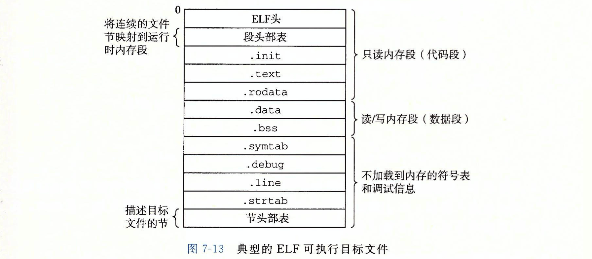
- 结构类似于“ELF 可重定向文件”；
- .init：定义了函数 _init，由程序的初始化代码使用；
- 程序头部表（Program Headers）描述了可执行文件连续的片（chunk）被映射到连续内存段的具体映射关系；多个经过对齐的 Section 被组织成 Segmnet，同样再经过对齐后排列并映射到进程的 VAS 中；
- Linux X86-64 运行时内存映像：

- 每个 Linux 进程对应于一个运行时内存映像；
- 从 VAS 的地址 0x400000 处开始加载。VAS 的最高地址段为内核保留（操作系统驻留在内存中的部分）；
- 加载器从 _start 函数（ctr1.o）开始执行代码，然后调用系统启动函数 __libc_start_main（libc.so），然后执行 main 函数；
- 加载细节：当 Shell 运行一个程序时，父 Shell 进程生成一个子进程，它是父进程的一个复制。子进程通过
execve系统调用启动加载器。加载器删除子进程现有的虚拟内存段，并创建一组新的代码、数据、堆和栈段。新的栈和堆被初始化为 0。通过将 VAS 中的页映射到可执行文件的页大小的片，新的代码和数据段被初始化为可执行文件的内容。然后，加载器从 _start 开始执行代码。除了一些头部信息，在加载过程中没有任何从磁盘到内存的数据复制。直到 CPU 引用一个被映射的虚拟页时才会进行复制，此时，操作系统利用它的页面调度机制自动将页面从磁盘传送到内存。
- Page 486共享库：
- 相较于“静态库”，不需要将数据和代码复制和嵌入到可执行文件中；
- 在内存中，一个共享库的 “.text” 代码段可以被不同的正在运行的进程共享；
- PIC（Position-Independent Code，位置无关代码）：可以加载而无需重定位的代码（-fPIC/-fpic）；
- GOT（Global Offset Table，全局偏移量表）：存放在 .data 段中。每个被目标模块引用的全局数据目标（过程或全局变量）都有一个 8 字节的条目。编译器还为这些条目生成了对应的“重定位记录”。在加载时，动态链接器会重定向 GOT 中的条目，每个引用全局目标的目标模块都有自己的 GOT；
- PLT（Procedure Linkage Table，过程链接表）：如果一个目标模块调用定义在共享库中的任何函数，那么它就有自己的 GOT 与 PLT。GOT 是 .data 段的一部分，PLT 是 .text 段的一部分。实际运行时，程序自己的各个节与共享库的各个节都会被加载到当前进程的 VAS 中的不同位置，因此有其各自的 GOT 与 PLT。
- PIC（Position-Independent Code，位置无关代码）：可以加载而无需重定位的代码（-fPIC/-fpic）；
- 相较于“静态链接”会有一定的性能损失，大约在 5% 以下；
- 使用了共享库的应用其执行入口为“动态链接器”，由它完成对共享库的加载和处理，然后再将控制权交还给应用程序；
- JNI（Java Native Interface）的基本思想：将本地 C 函数编译到一个共享库中。当一个正在运行的 Java 程序试图调用该函数时，Java 解释器利用
dlopen接口动态加载共享库，然后调用该函数；
- GOT 与 PLT 协作流程：
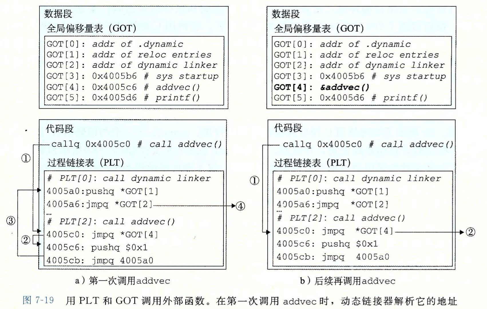
- 初始时，每个 GOT 条目都指向对应 PLT 条目的第二条指令；
- 第一步：不直接调用 addvec，程序调用进入 PLT[2]，这是 addvec 的 PLT 条目；
- 第二步：第一条 PLT 指令通过 GOT[4] 进行间接跳转到当前 PLT 条目的第二条指令；
- 第三步：将 addvec 的 ID 压入栈中后，PLT[2] 跳转到 PLT[0]；
- 第四步：PLT[0] 通过 GOT[1] 间接地把动态链接器的一个参数压入栈中，然后通过 GOT[2] 间接跳转进动态链接器中。动态链接器运行时会重写 GOT[4] 上函数 addvec 的地址，再把控制权交给该函数；
- 后续再次访问该函数时，PLT[2] 的第一条指令会直接跳转到 GOT[4] 上 addvec 函数的地址。
- Page 492库打桩：允许截获对共享库函数的调用，取而代之执行自己的代码。
- 编译时打桩：利用编译时的 “-I.” 参数，让编译器优先在本地目录查找共享库的头文件，然后在该头文件中，我们使用宏来替换实际运行的函数；
- 链接时打桩：利用 Linux 静态链接器的 “--wrap f” 标志。这个标志告诉链接器，把对符号 f 的引用解析为 __wrap_f，并且把对符号 __real_f 的引用解析为 f；
- 运行时打桩：利用动态链接器的 “LD_PRELOAD” 环境变量。如果该变量被设置为一个共享库路径名的列表，则当加载和执行一个程序时，需要解析未定义引用时，动态链接器会优先搜索 LD_PRELOAD 指定的库。
第八章、异常控制流
- Page 501异常控制流（Exceptional Control Flow，ECF）：现代系统通过使控制流发生突变来对各种情况（异常）做出反应。当处理器检测到有事件发生时，它就会通过一张叫做“异常表”的跳转表（其起始地址存放在“异常表基址寄存器”中），进行一个间接过程调用，到一个专门设计用来处理这类事件的子程序中。异常处理完毕后，根据异常事件类型，会发生：
- 处理程序将控制返回给当前指令；
- 处理程序将控制返回给下一条指令；
- 处理程序终止被中断的程序；
- Page 504异常的类别：
- 中断（一般指“I/O 硬件中断”）：在当前指令完成后，处理器注意到中断引脚电压升高，就从系统总线读取异常号，然后调用“中断处理程序”进行处理；
- 陷阱和系统调用：是有意的异常，是执行一条指令的结果。其最重要的用途是在用户程序与内核之间提供一个接口。
syscall指令会导致一个到异常处理程序的陷阱，这个程序解析参数，并调用适当的内核程序； - 故障：由错误情况引起，可能能够被故障处理程序修正。常见的一个示例是“缺页异常”，即指令引用一个虚拟地址，而与之相对的物理页面不在内存中。其他的还有“除零错误”等；
- 终止：不可恢复的致命错误造成的，通常是硬件错误；
* 0~31 的异常号对应的是由 Intel 架构师定义的异常，这些异常通常会被分别映射到 Linux 内核的不同信号上（比如 “SIGSEGV” 信号导致的 “Segmentation Fault”）。
- Page 508进程：
- 提供给应用程序的抽象：
- 一个独立的逻辑控制流：提供一个假象，好像我们的程序独占地使用处理器，即“抢占式系统”。相对于“物理控制流（处理器的实际执行逻辑）”；
- 一个私有的地址空间：提供一个假象，好像我们的程序独占地使用内存系统（系统地址空间）。
- 用户模式与内核模式：
- 处理器通常是用某个控制寄存器的一个模式位来标记当前进程的权限；
- 进程从用户模式转变为内核模式的唯一方法是通过诸如：中断、故障或陷入“系统调用”这样的异常（异常处理程序运行在内核模式中）；
- 上下文切换：
- 进程上下文：内核重新启动一个被抢占的进程所需的状态（通用目的寄存器、浮点寄存器、程序计数器、用户栈、状态寄存器、内核栈、描述地址空间的页表、包含有关当前进程信息的进程表，以及已打开文件的“文件表”等）；
- 上下文切换：
- 由内核中的“调度器”执行，执行时会发生时钟中断（维持系统时间、促使环境的切换，保证所有进程共享 CPU 时间片）或其他类型中断；
- 保存当前进程上下文；
- 恢复某个先前被抢占进程被保存的上下文；
- 将控制传递给这个新恢复的进程。
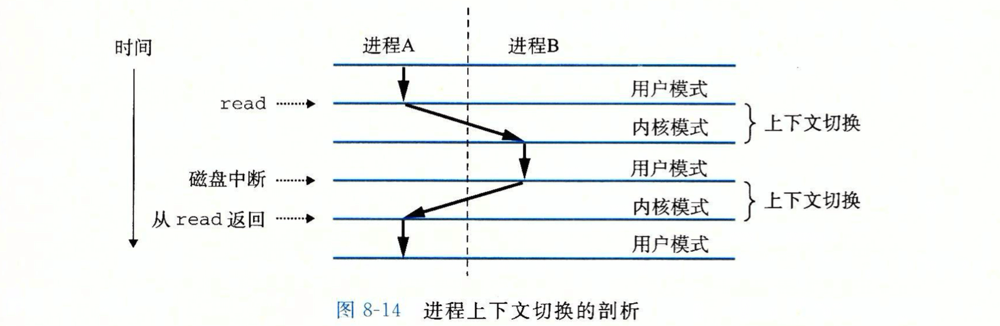
- 进程 A 由于系统调用 read 而陷入到内核，内核中的陷阱处理程序请求磁盘控制器的 DMA 传输。由于磁盘控制器需要一段相对较长的时间，因此内核执行从进程 A 到 B 的上下文切换。直到某个时刻，磁盘发出一个中断信号，表示数据已经传送到内存，此时内核从进程 B 切换到 A。
- 进程的三种状态：
- 运行：在 CPU 上执行，或在等待被执行；
- 停止：进程的执行被挂起，且不会被调度。当收到 SIGSTOP、SIGTSTP、SIGTTIN 或 SIGTTOU 信号时，进程会停止直到收到 SIGCONT 信号；
- 终止：进程永远地停止了。原因可能为：
- (1) 收到一个信号，其默认行为是终止进程；
- (2) 从主程序返回；
- (3) 调用
exit函数。
- Page 512系统调用的错误处理：
// strerror 函数返回一个文本串，描述了某个错误的详细信息；
void unix_error(char *msg) {
fprintf(stderr, "%s: %s\n", msg, strerror(errno));
exit(0);
}
- 当 Unix 系统级函数遇到错误时，它们通常会返回 -1，并设置全局整数变量
errno来表示具体的错误类型； - 可以利用“错误处理包装”来简化对系统调用的错误处理过程。
- Page 513进程控制：
- 获取进程 ID（getpid/getppid）：
#include <sys/types.h>
#include <unistd.h>
pid_t getpid(void); // 获得调用进程的 PID；
pid_t getppid(void); // 获得调用进程父进程的 PID；
- 创建和终止进程（fork）：
int main() {
pid_t pid;
int x = 1;
pid = fork(); // 创建进程；
if (pid == 0) {
/* 子进程 */
printf("child: x=%d\n", ++x); // "child: x=2".
exit(0);
}
/* 父进程 */
printf("parent: x=%d\n", --x); // "parent: x=0".
exit(0);
}
- 子进程得到与父进程用户级虚拟地址空间相同的一份副本，同时子进程还获得与父进程中任何打开文件描述符相同的副本；
fork函数调用一次，返回两次。一次是在父进程中，一次在子进程中。子进程中该函数的返回值永远为 0，父进程中返回子进程的实际 PID；- 进程并发执行。内核交替执行它们的逻辑控制流中的指令；
- 父子进程地址空间独立。地址空间内容（用户栈、本地变量值、堆、全局变量和代码）相同但是独立。
- 回收子进程（waitpid / wait）：
- 当进程终止时，内核并不会立即把它从系统中清除。此时，该进程被称为“僵死进程”，它被保持在一种已终止的状态中，直到被它的父进程回收。当父进程回收已终止的子进程时，内核将子进程的退出状态传递给父进程，然后抛弃已终止的进程；
- 类 Unix 操作系统中，init 进程是所有进程的祖先，它是在系统启动时由内核创建的，其 PID 为 1。在特殊情况下，它会代替父进程来回收僵死的子进程。
- 让进程休眠（sleep / pause）：
sleep函数将一个进程挂起一段指定的时间；- Pause is made obsolete by
sigsuspend.
- 加载并运行文件程序（execve）：
execve调用一次，从不返回（除非出现错误）；execve在当前进程的上下文中加载并运行一个新的程序，它会覆盖当前进程的地址空间，但不会创建一个新的进程。新的程序仍然有相同的 PID，并且继承了调用该函数时已打开的所有文件描述符。
- 新程序用户栈的典型结构，参数和环境变量（getenv / setenv / unsetenv）：
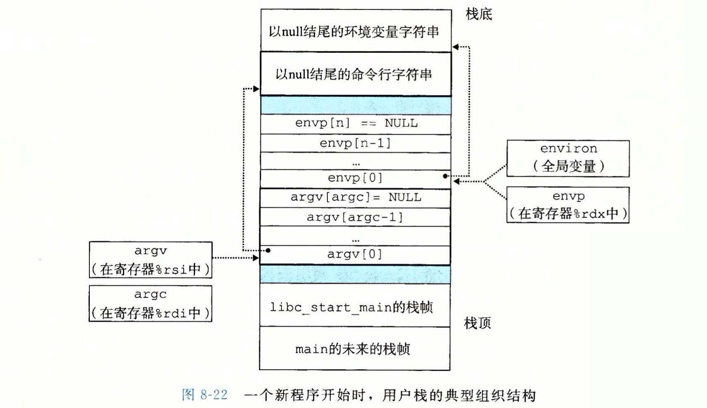
- 全局变量
environ指向环境变量字符串指针数组的第一个元素（*envp[0]*）； - 栈中的 envp 与 argv 指针数组以 null 结尾（分割）。其中每个指针都指向栈中的一个环境变量或参数字符串。
- Page 526信号：允许进程和内核中断其他进程。一个信号就是一条消息，它通知进程系统中发生了一个某种类型的事件。
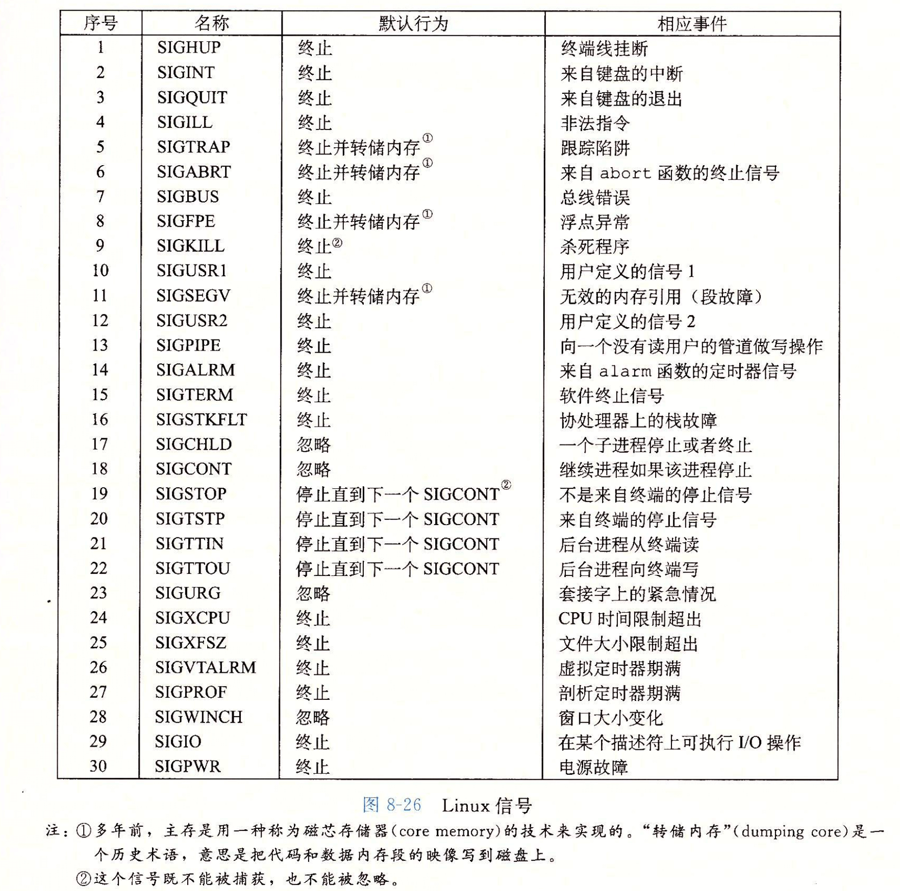
- 在任何时刻，一种类型至多只会有一个待处理信号；
- 一个进程可以发送信号给自己；
- 内核为每个进程在 pending 位向量中维护着待处理信号的集合，而在 blocked 位向量中维护着被阻塞的信号集合。
- 发送信号：
- 进程组：每个进程都属于一个进程组。默认情况下，一个子进程与它的父进程同属一个进程组（
getpgrp/setpgid）； - 使用 /bin/kill 程序发送信号：“*/bin/kill -9 15213*”，发送信号 9（SIGKILL）给进程 15213。一个负的 PID 会导致信号被发送到进程组 PID 中的每个进程；
- 从键盘发送信号：通过键盘发出的信号会发送给前台进程组中的每个进程；
- 使用 kill 函数发送信号：int kill(pid_t pid, int sig);
- 使用 alarm 函数发送信号：进程可以通过该函数向自己发送 SIGALRM 信号。
- 接收信号：
- 当内核把进程 p 从内核模式切换到用户模式时（如从系统调用返回或完成了一次上下文切换），它会检查进程 p 的未被阻塞的待处理信号集合（pending & ~blocked）。如果集合非空，则内核会选择集合中的某个信号 k（通常是最小的 k），并强制 p 接受信号 k。
- SIGSTOP 和 SIGKILL 信号的默认行为无法被修改；
- 可以通过
singal函数来修改信号的默认行为； - 信号处理程序可以被其他信号处理程序中断；
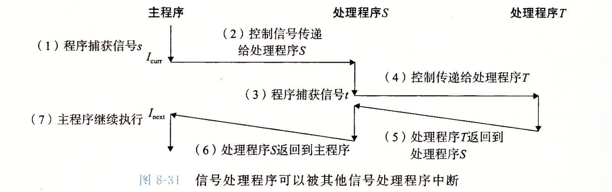
- 内核默认阻塞任何当前处理程序正在处理信号类型的待处理信号（新接收的同类型信号会变为“待处理”，不会被立即处理），任何时刻只会有一个“待处理”信号，多余的同类型信号将被丢弃。因此，*不可以用信号来对其他进程中发生的事件计数；
- 未处理的信号是不排队的，这意味着，如果存在一个未处理的信号就表明至少有一个信号已经到达了；
- 可以使用
sigprocmask和其他相关函数来设置和解除阻塞（blocked）的信号类型； - 信号处理程序会与主程序“并发”地运行（*这里指处理程序会打断主程序指令执行的完整性，进而导致“数据竞争”），一些原则：
- 处理程序要尽可能的简单：例如，处理程序可能只是简单地设置全局标志并立即返回；所有与接收信号相关的处理都由主程序执行，它周期性地检查（并重置）这个表示位；
- 在处理程序中仅调用异步信号安全的函数：即这些函数仅访问局部变量，或不能被信号处理程序中断；
- 保存和恢复 errno：在进入处理程序时保存 errno，返回之前恢复它；
- 阻塞所有信号，保护对共享全局数据结构的访问：在访问共享的全局数据之前，阻塞所有信号，以防止数据竞争；
- 用 volatile 声明全局变量：告诉编译器不要缓存该变量，即每次访问都从内存中读取；
- 用 sig_atomic_t 声明标志：保障对全局标志变量的读写是原子性的；
- 使用
sigaction函数明确指定想要使用的信号处理语义；
- Page 546非本地跳转：C 语言提供的一种用户级的异常控制流形式，它将控制直接从一个函数转移到另一个当前正在执行的函数，而不需经过正常的“调用-返回”序列。非本地跳转是通过
setjmp与longjmp函数来提供的。
- setjmp：在 env 缓冲区中保存当前调用环境（程序计数器、栈指针以及通用寄存器）。该函数会返回两次；
- longjmp：从 env 缓冲区中恢复当前调用环境，并触发一个最近一次初始化 env 的 setjmp 调用的返回。该函数从不返回；
- 一个应用 — 从深层错误中快速返回：允许从一个深层嵌套的函数调用中立即返回（如检测到某个错误），而不需要解开整个栈（stack unwinding）;
- 一个应用 — 软重启：使用专用于信号处理的
sigsetjmp与siglongjmp函数。这两个函数不是“异步信号安全”的； - 由于 longjmp 会跳过所有中间调用，因此可能会产生内存泄露。
评论 | Comments